Přesná razidla, CNC kovoobrábění a karusel do 900 mm
Vyrábíme ocelová a mosazná razidla pro ruční i strojní ražení za studena i za tepla, znaky OTK, navalovací kotouče a přesné strojní díly s více než 30 lety zkušeností.
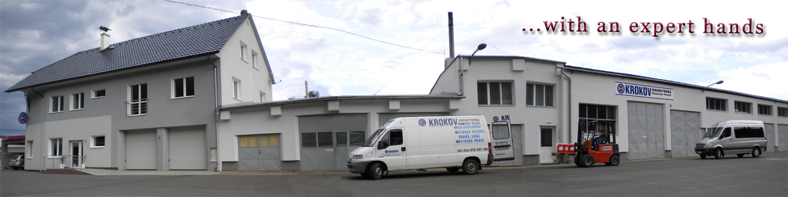
Kompletní technologické zázemí od CAD modelování a gravírování po CNC frézování a tepelné zpracování.
Výroba razidel & log
Výroba klasických i speciálních razidel z nástrojové oceli 19 312 a 19 573 k ručnímu i strojnímu ražení za studena i za tepla. Znaky, firemní loga, kontrolní razidla OTK a navalovací kotouče.
- Písmena A–Z a číslice 0–9 v sadách i kusově
- Kalení a popouštění na 58–62 HRC
- Zrcadlově obrácená razidla do matric a forem
CNC kovoobrábění
Přesné 3-osé frézování na vertikálních centrech ZPS MCFV a MAS MCV s pojezdy do 1060 mm. Tvarové dílce, upínací čelisti, nástrojové desky a kusová i sériová výroba.
- Obráběcí centra ZPS MCFV 1060 NT & MAS MCV 750
- Frézování oceli, ocelolitiny, litiny i slitin kovů
- Středové chlazení pro hluboké vrtací operace
Karusel do 900 mm
Obrábění rozměrných rotačních tvarů a součástí až do průměru 900 mm na svislých karuselových strojích. Těžké příruby, prstence a rotační polotovary.
- Soustružení vnějších i vnitřních ploch do Ø 900 mm
- Těžké výkovky, svařence a odlitky
- Kusová i malosériová přesná zakázková výroba
Rytecké práce
Počítačově řízené gravírování na CNC strojích. Precizní reliéfy, matricová zrcadlová razidla, měřítka, technické logotypy a značení do oceli i mosazi.
- Gravírování 2D/3D z dodaných CAD/vektorových dat
- Mosazná razidla pro slepotisk a ražbu do kůže
- Výrobní štítky, ovládací panely a přístrojová měřítka
Interaktivní přehled standardních i zakázkových razidel, obráběných součástí a nástrojových komponentů.
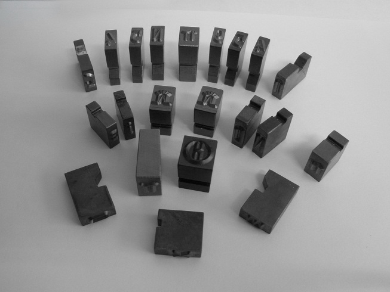
Tradiční výrobaRuční ocelová razidla v sadách i jednotlivě
Klasická i speciální ruční razidla pro ražení do oceli a kovů za studena i za tepla. Písmena, číslice a zakázkové znaky.
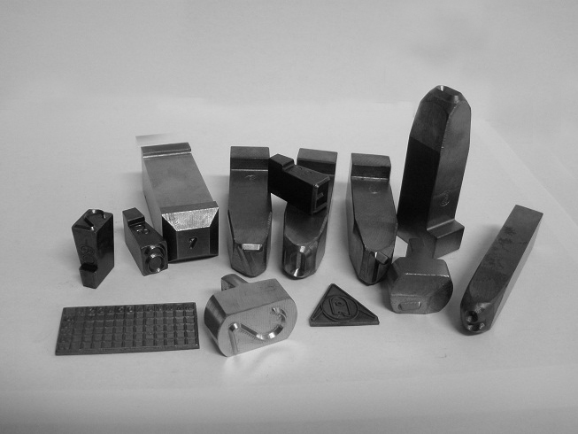
Kontrola jakosti OTKSpeciální razidla pro technickou kontrolu
Inspekční a kontrolní značky pro výstupní kontrolu OTK, svářečské značky a kódová razidla s vysokou ostrostí detailu.
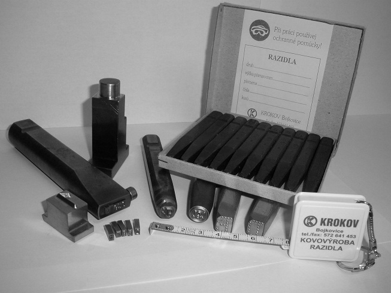
Strojní lisyStrojní razidla pro lisovací operace
Průmyslová strojní razidla přizpůsobená pro mechanické, pneumatické a hydraulické lisy s vysokou dynamickou odolností.
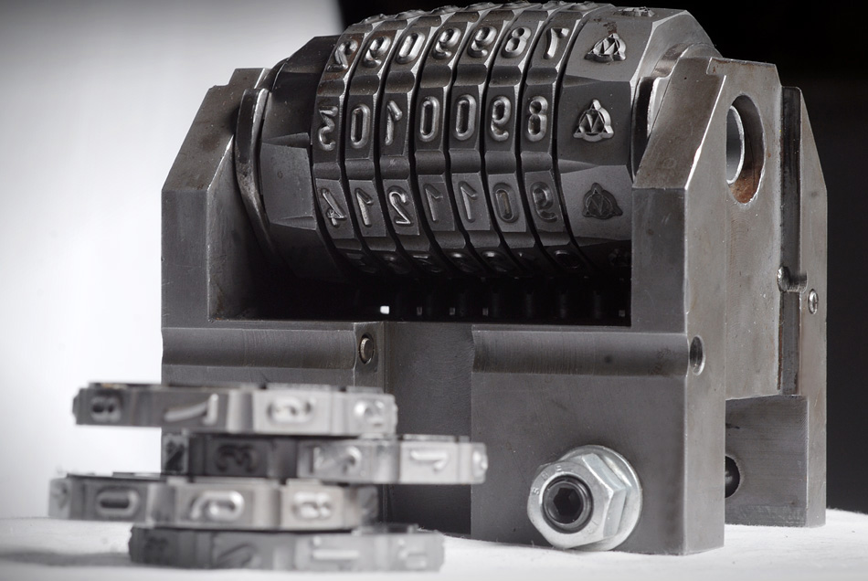
Rotační značeníNavalovací a razicí kotouče
Rotační navalovací segmenty a kotouče pro kontinuální značení trubek, profilů, tyčí a rotačních součástí přímo ve výrobní lince.
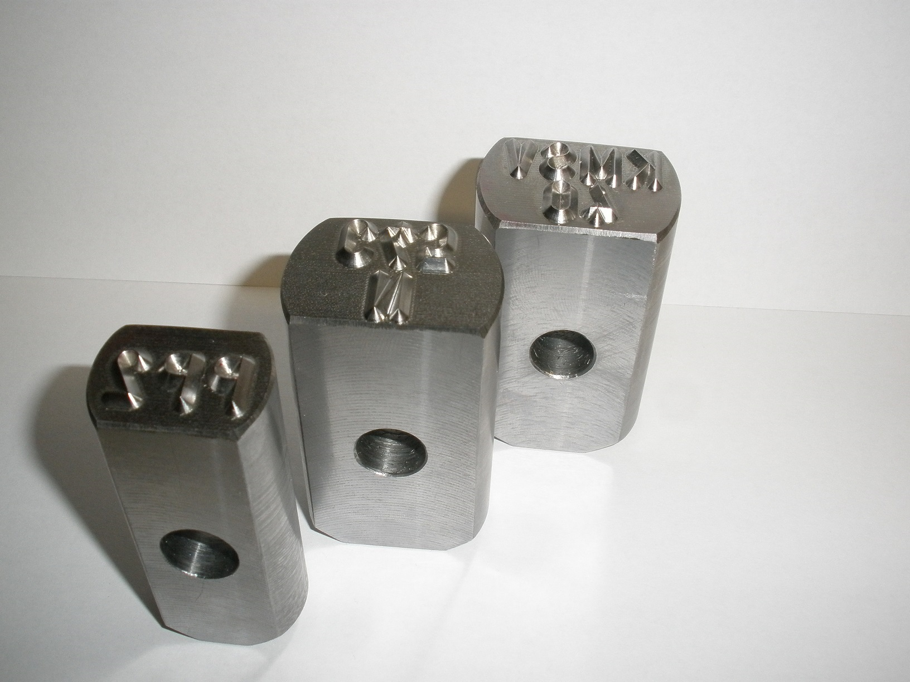
Stavebnicový systémDržáky a hlavy pro skupinové ražení
Výměnné stavebnicové držáky pro víceřádkové ražení textů, šarží, výrobních čísel a dat výroby s rychlou aretací znaků.
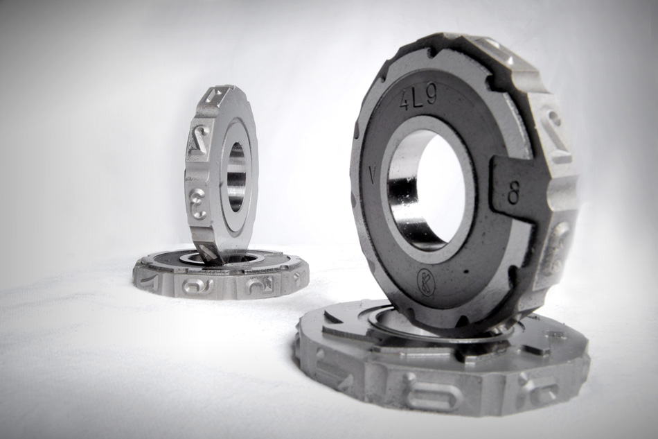
Formy a matriceZrcadlově obrácená razidla do matric a forem
Precizní reverzně gravírovaná razidla určená pro vkládání do tvářecích matric, vstřikovacích forem a slévárenských modelů.
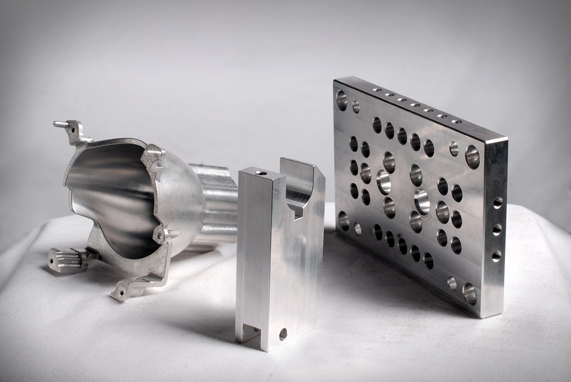
Termoražba & slepotiskMosazná razidla pro slepotisk a kůži
Jemně rytá mosazná razidla s vynikající tepelnou vodivostí pro horkou ražbu do kůže, dřeva, plastů, papíru a knihařský slepotisk.
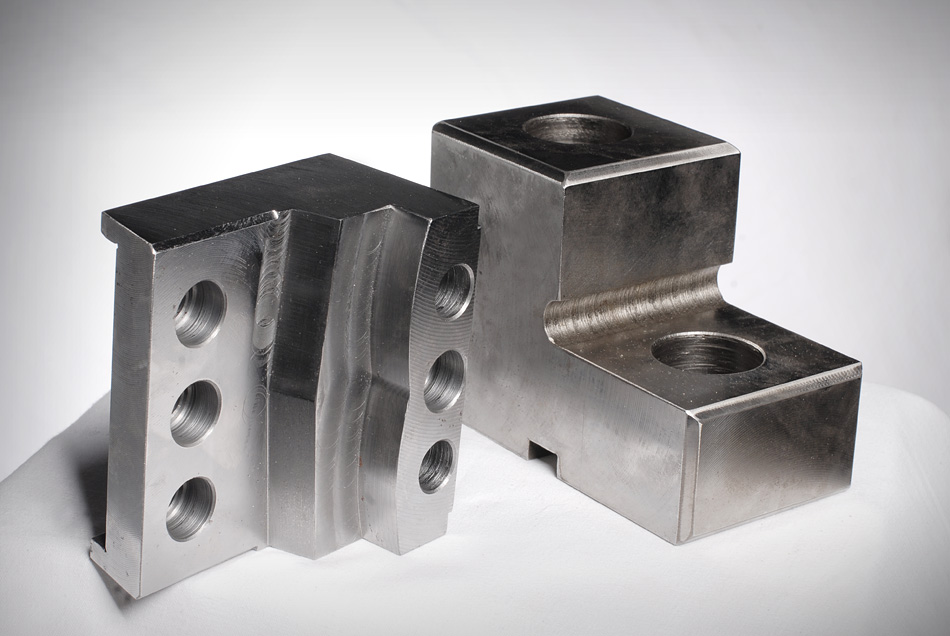
CNC 3 osyPřesné CNC tvarové díly a kovoobrábění
Zakázkové frézování a soustružení tvarově náročných dílců na CNC centrech ZPS a MAS. Kusová i sériová přesná produkce.
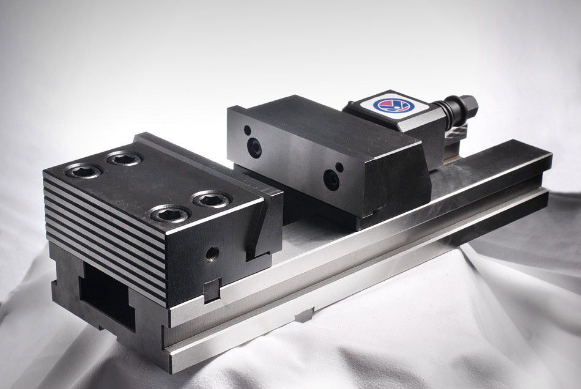
Nástrojové upínkyUpínací čelisti, prizmata a tvarové bloky
Výroba vysoce přesných upínacích čelistí pro svěráky a hydraulická upínadla, kalená prizmata a polohovací bloky.
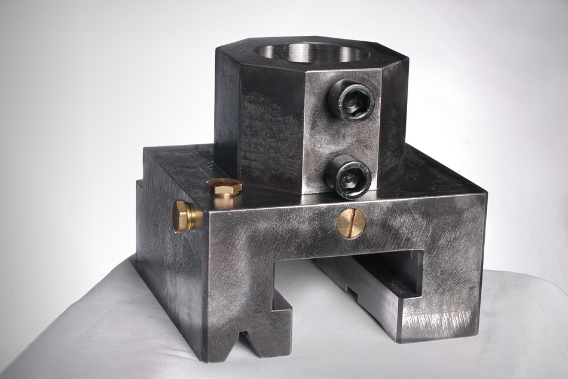
Průměr do 900 mmKaruselové obrábění tvarů a průměrů do 900 mm
Obrábění rozměrných rotačních těles, přírub, prstenců a velkých tvarových dílů na svislých karuselových strojích.
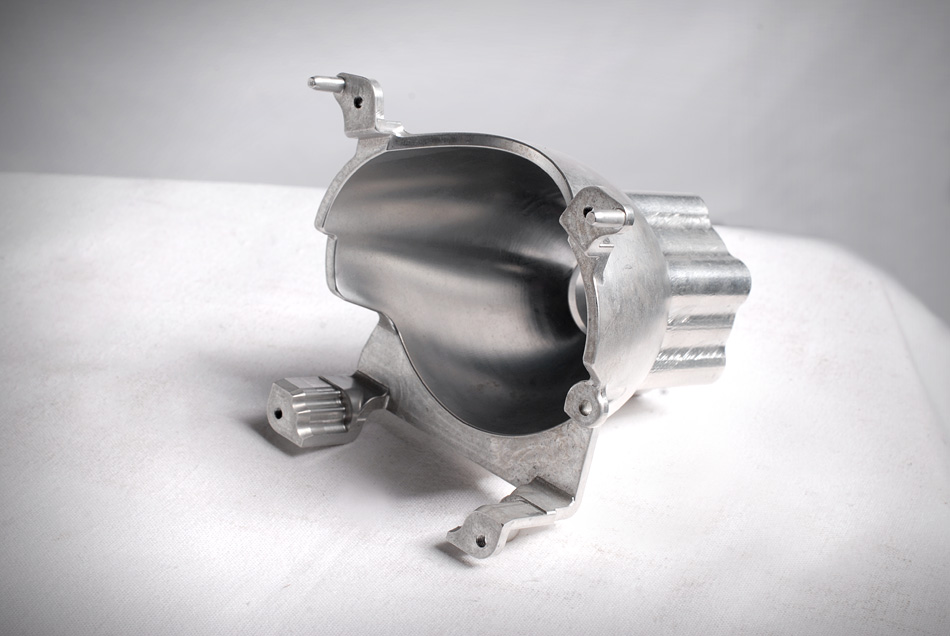
Přesné broušeníTvarové desky a kalené vložky
Kompletní výroba vodicích lišt, kalených střižných desek, opěrných podložek a tvarových nástrojových komponent.
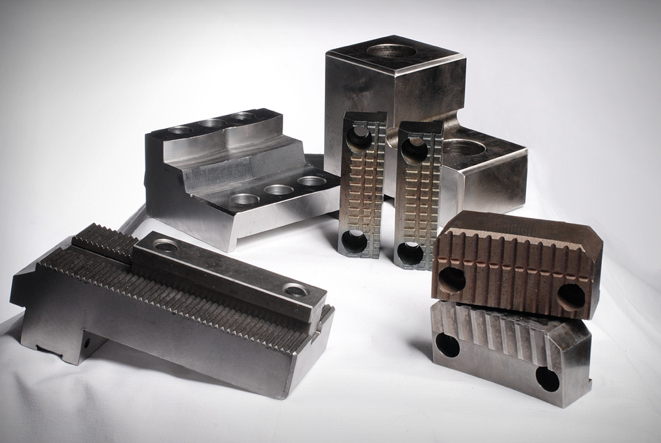
CAD/CNC rytíRytecké práce a CNC gravírování
Počítačově řízené gravírování technických reliéfů, firemních logotypů, výrobních štítků, přístrojových panelů a měřítek.
Moderní obráběcí centra ZPS a MAS doplněná stabilní dělicí pilou BOMAR a konvenčními stroji pro kusovou výrobu.
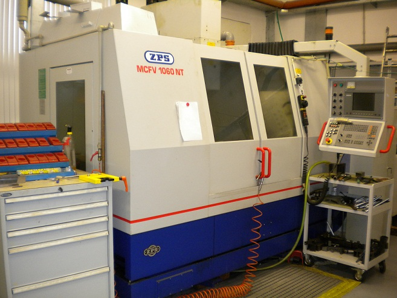
ZPS MCFV 1060 NT
Klasické frézovací centrum s moderně řešenou konstrukcí s lineárními vedeními ve všech osách a digitálními pohony posuvů. Tři souvisle řízené osy pro frézovací, vrtací, vystružovací a zahlubovací operace včetně řezání závitů v oceli, ocelolitině, litině i slitinách lehkých a barevných kovů.
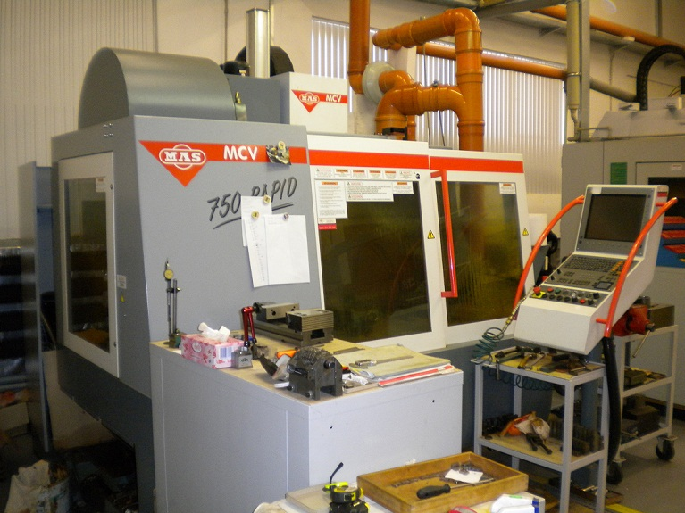
MAS MCV 750 Rapid
Stroj postavený na nosném rámu ve tvaru C s optimalizovaným tvarem odlitků pro vysokou tuhost a dynamiku. Lineární vedení ve všech osách garantuje špičkovou přesnost. Automatická výměna nástrojů ze zásobníku pro práci v automatickém cyklu se středovým přívodem chladicí kapaliny.
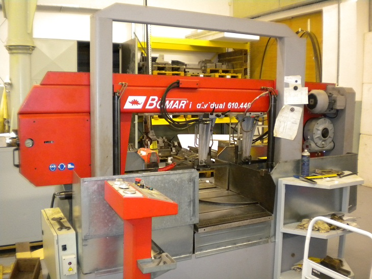
BOMAR individual (řada GH)
Stabilní strojní pásová pila pro univerzální použití s nízkou úrovní vibrací a vysokou přesností řezu. Jednoduchá obsluha při úhlovém řezání do 60° ve spojení s možností dělení polotovarů až do délky 6 500 mm pomocí vícenásobného podání materiálu.
Konvenční stroje pro kusovou výrobu
Firma disponuje celou řadou konvenčních nástrojářských strojů pro flexibilní kusovou produkci, úpravy střižných hran, broušení a dokončovací operace.
Volné výrobní a skladové prostory 250 až 1 000 m²
Kromě kovoobrábění nabízíme volné výrobní a skladové prostory o rozloze 250 až 1 000 m² s kompletním zabezpečením.
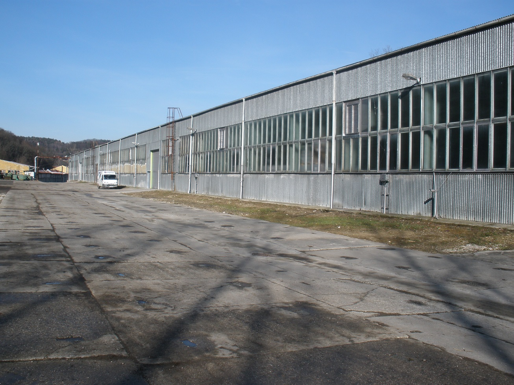
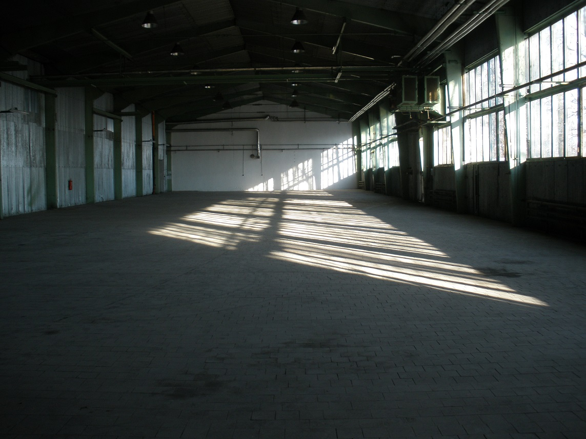
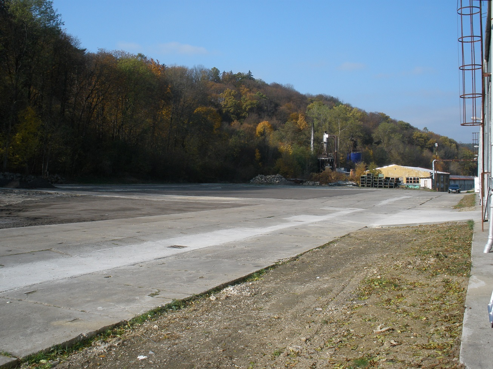
Pošlete nám výkresovou dokumentaci nebo specifikaci požadovaného razidla či obrobku. Obratem se vám ozveme.
KROČKOVÁ s.r.o.
Výroba razidel, CNC kovoobrábění & karusel
Pavlovická 83/17, Pavlovičky, 779 00 Olomouc
IČO: 07376791Pondělí – Čtvrtek: 7:00 – 16:00
Pátek: 7:00 – 14:00